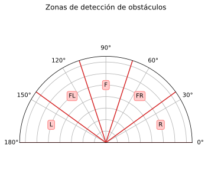

Clase 14 - Laboratorio
1 Simulación de sensores con Gazebo (Parte II)
1.1 Sensor de tipo LiDAR
Descripción del sensor
<gazebo reference="{nombre_link}">
<sensor name="{nombre_sensor}" type="gpu_lidar">
<update_rate>{freq_hz}</update_rate>
<topic>{nombre_topic}</topic>
<always_on>true</always_on>
<visualize>true</visualize>
<lidar>
<scan>
<horizontal>
<samples>{cantidad_rayos}</samples>
<resolution>1</resolution>
<min_angle>{min}</min_angle>
<max_angle>{max}</max_angle>
</horizontal>
<vertical>
<!-- Mismos parámetros que 'horizontal' -->
</vertical>
</scan>
<range>
<min>{rango_min}</min>
<max>{rango_max}</max>
<resolution>{res_lineal}</resolution>
</range>
</lidar>
</sensor>
</gazebo>Modelo de ruido gaussiano
<noise>
<type>gaussian</type>
<!-- Media -->
<mean>{media}</mean>
<!-- Desviación estándar -->
<stddev>{desviacion_estandar}</stddev>
</noise>Parámetros de ejemplo
- Rango de distancia: 0.05 - 15.0 [m]
- Frecuencia de escaneo: 10 [Hz]
- Resolución angular: 0.1125°
- Presición: ± 30 [mm]
- Resolución: 10 [mm]
<sensor name="lidar" type="gpu_lidar">
<always_on>true</always_on>
<update_rate>10</update_rate>
<topic>/scan</topic>
<visualize>true</visualize>
<lidar>
<scan>
<horizontal>
<samples>3200</samples>
<resolution>1</resolution>
<min_angle>${-pi}</min_angle>
<max_angle>${pi}</max_angle>
</horizontal>
<!-- Al ser 2D no tiene parámetros verticales -->
</scan>
<range>
<min>0.05</min>
<max>15</max>
<resolution>0.010</resolution>
</range>
<noise>
<type>gaussian</type>
<mean>0.0</mean>
<stddev>0.030</stddev>
</noise>
</lidar>
</sensor>1.2 Detector de obstáculos con LiDAR
1. Modificar el
URDFdel robot para implementar un LiDAR simulado2. Crear un nodo que a partir de los datos del sensor detecte obstáculos dentro de 5 zonas particulares
NotaPuede mostrar la distancia mínima para cada zona o si supera cierto umbral enviar un mensaje indicando que zona/s